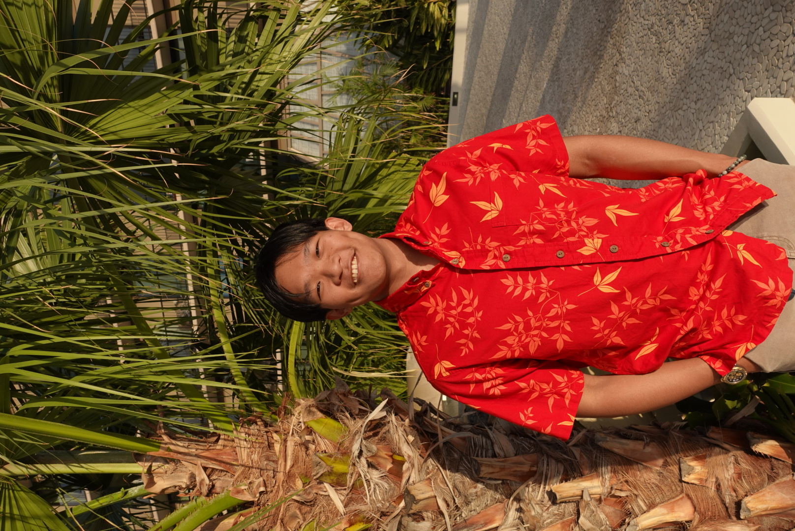
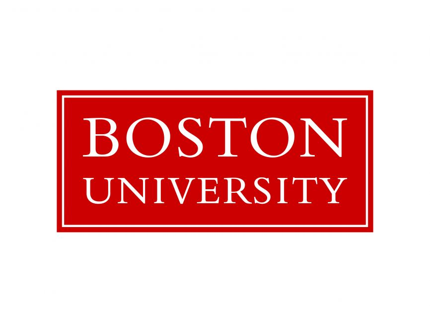
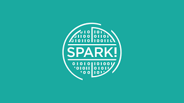
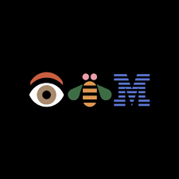

Born and raised in Hawaii, graduated from Iolani School, and recently graduated from Boston University majoring in Data Science. I went in as a statistics and computer science major but transferred over to the data science program since the classes were more aligned with what I wanted to do.
I’ve worked at a data science organization BU Spark as a technical project manager working on projects to help organizations in the Boston area with their data science projects that they had for the student teams.
I also had the chance to intern at IBM as a data scientist this past summer working on improving the ibm.com search engine. I’ve also been helping with a healthcare startup looking to develop software to aid clinicians in preventative healthcare for their patients utilizing social determinants of health to drive the decisions. I have a huge interest in data science, in particular, the machine learning side has piqued my interest.
I was also a part of the first group of data science tutors for the new Data Science College at Boston University assisting teachers and students in the data science coursework.


